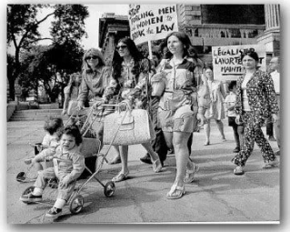
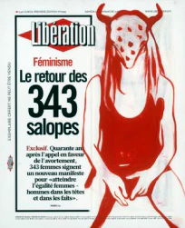

Nous vivons dans une époque et dans un pays où certains droits sont acquis, c'est pourquoi certains pensent que tout est gagné. Il est évident que non. Le féminisme, par son histoire, parce qu'il est international et parce qu'il souligne le fossé entre l'égalité en droit et l’égalité réelle , nous ouvre les yeux. Droit de vote, légalisation de la contraception et de l’interruption volontaire de grossesse, création du Planning Familial, autorité parentale partagée, égalité des salaires, parité, harcèlement sexuel, lutte contre les violences faites aux femmes, écriture inclusive tout cela fait partie des grandes étapes qui ont constituées l'évolution des mentalités concernant le féminisme.
Le manifeste des 343 salopes a été publié en 1971. Il s'agit d'une pétition signée par 343 femmes anonymes et célèbres, dans ces 343 femmes nous pouvons identifier Simone de Beauvoir. Toutes ont avoué avoir avorté illégalement, s'exposant donc à des poursuites judiciaire. Cependant, suite à cela, les médecins ont demandé le droit à l'avortement et la dépénalisation de l'avortement a donc été effectué en 1975. Oui, ceci est un grand pas vers la liberté des femmes et plus précisément concernant la réappropriation du corps de la femme. En 1971 elles en ont assez. Nous disons non au contrôle permanent que la société et les hommes ont sur le corps de la femme.
Simone de Beauvoir est une romancière et philosophe. Il est indispensable de parler de Simone de Beauvoir lorsqu'on parle du féminisme. Elle a également écrit un livre se nommant "le deuxième sexe”. Cet essaie est une œuvre philosophique parue en 1949 dans ces textes, l'auteur décrit explicitement la condition féminine et l'émancipation des femmes. Il est évident qu'à l'époque où Simone de Beauvoir écrit, l'émancipation des femmes n'est pas accomplie (tout comme aujourd'hui encore) c'est pourquoi elle insiste sur la liberté de la femme. Cependant même si les femmes ont acquis le droit de vote elles n’ont toujours pas la liberté financière : elles n'ont pas le droit d'ouvrir un compte en banque sans l'autorisation de leur mari. Elles n'ont pas non plus la liberté de leur corps. Le droit à l'avortement est encore fortement pénalisé. Il est important de souligner que la contraception n'existe pas encore. Par ailleurs, le combat que cette féminisme à commencer est loin d'être fini.
Il est évident que nous avons encore besoin du féminisme .Cependant expliquer à autrui certaines notions en particulier telle que la culture du viol qui est un élément essentiel dans la compréhension de l'engagment de cette cause, indispensable pour l'évolution du féminisme. Il y a 1000 manières d'être féministe, comme tout mouvement politique, le féminisme est riche de débats et de tendances.
Lire l'article suivant